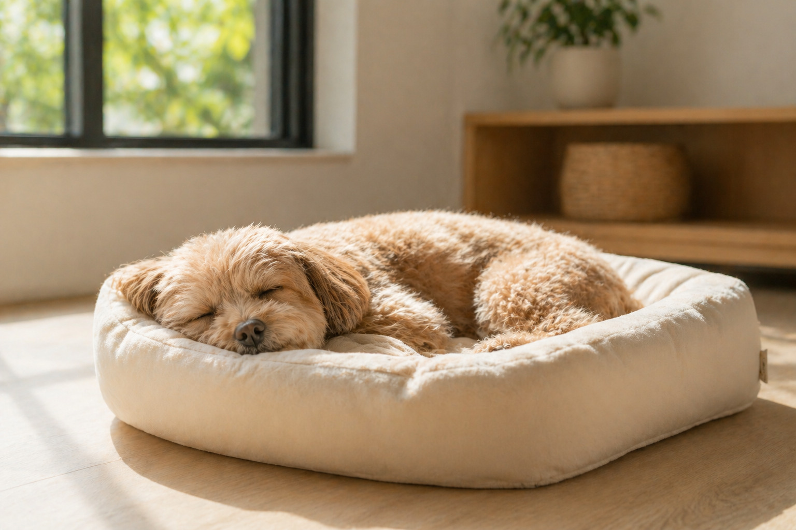

分區照護
依照狗狗與貓咪的生活習性安排不同空間，降低氣味、聲音與陌生互動造成的不安。
ABOUT KIMO-JI
綺毛寄相信，寵物旅館不只是暫時寄放，而是替家長承接一段需要被信任的時間。我們以狗貓分區、健康鮮食與每日紀錄，讓毛孩在陌生環境裡也能保留熟悉節奏。

依照狗狗與貓咪的生活習性安排不同空間，降低氣味、聲音與陌生互動造成的不安。
保留原本用餐節奏，也能依需求加購健康鮮食，讓外宿期間吃得穩定、吃得安心。
透過照片、飲食、排泄與情緒紀錄，讓家長不用猜，能每天看見照護過程。
OUR PROMISE
第一次外宿的毛孩，可能會緊張、挑食、想家，也可能只是需要一點時間慢慢熟悉。綺毛寄用穩定流程與溫柔觀察，把照護做細，讓家長出門時能少一點擔心，讓毛孩回家時還是原本被愛的樣子。
CARE FLOW
從預約到退房，每一步都讓家長清楚知道毛孩會被如何照顧。
填寫入住日期、毛孩資訊與特殊需求。
確認飲食習慣、健康狀態與適合空間。
依作息安排餵食、休息、活動與紀錄。
退房時回顧入住狀態，交接注意事項。